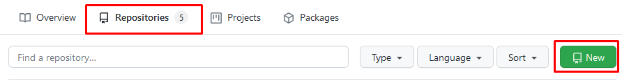
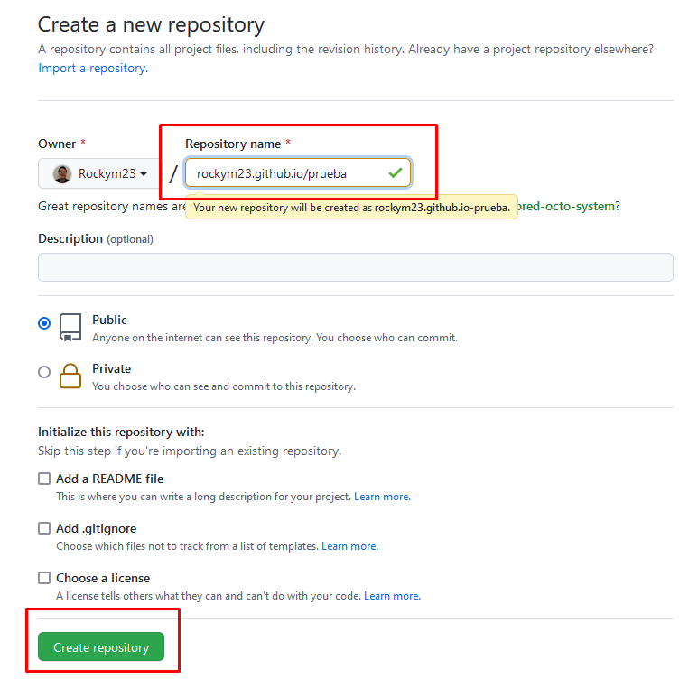
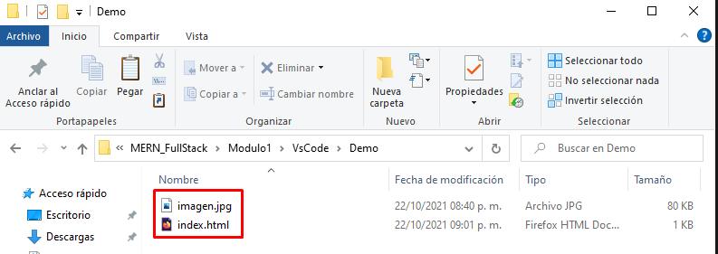
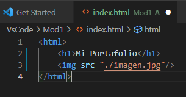
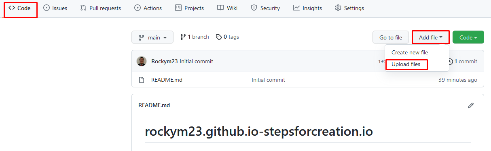
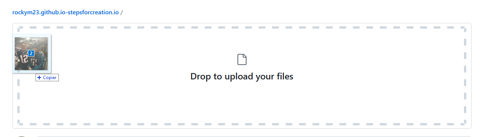
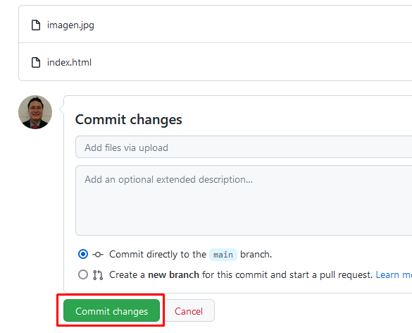

1.- Entra a Github y crea una cuenta, es gratuita.
2.- Una vez dentro, ve a la sección de Repositorios y presiona el botón "New" como se muestra en la siguiente imagen.

3.- Selecciona un nombre para tu repositorio y presiona el boton "Create Repository"

4.- Crea un archivo que se llame "index.html" y agregar una imagen cualquiera y nombralo "imagen.jpg"

5.- Abre el archivo "index.html" en Visual Studio Code y agregale lo siguiente:
<html>
<h1>Mi portafolio</h1>
<img src="./imagen.jpg">
</html>

6.- En la sección de "Code" presiona el Botón "Add File" y escoje la opción "Upload Files"

7.- Arrastra los archivos "index.html" e "imagen.jpg" al espacio donde dice "Drag files here to add them to your repository"

8.- Una vez agregados presiona el botón "Commit Changes"

9.- Listo, tu repositorio ha sido montado, puedes buscarlo en el url, como lo pusiste en el paso 3